Introduction & Prerequisites
This developer guide presents the required configurations and the main steps for the following actions:
- develop new/existent routines and deploy them to your sandbox
- import/export applications/enquiries/versions from/to your sandbox to/from your local machine
- extract from the database/load in the database data (.d) files from/to your sandbox to/from your local machine.
For this purpose, you need to have access to:
- Design Studio(locally)
- T24 libraries(locally)
- TAFJ (locally)
- Temenos Sandbox(cloud)
- Tortoise Git(locally) - download from here
A development package (containing Design Studio, T24 libraries and TAFJ) is provided by Temenos MarketPlace and it is pre-configured in order to be able to introspect T24 application hosted in MarketPlace Could Infrastructure.
This package is adapted according to the T24 version of your sandbox and it is provided as a zip file. After extracting it in your local machine to any folder, the bellow folders and files should exist:

The development package is pre-configured to be extracted in C:\TemenosDev path. If the package is extracted in another path(Your_DEV_Path), make sure you make the bellow changes to the development package:
- in tafj.link file from Your_DEV_Path\DesignStudio\dropins folder, update the path variable with the new path to TAFJ\eclipse folder.(make sure you use '/' as separator between folders)
- in tafj.properties from Your_DEV_Path\TAFJ\conf, update lines 13,26 and 42 based on Your_DEV_Path.
- if a project already exists in your DesignStudio workspace, in Launch T24 Packager (TAFJ).launch file from Your_DEV_Path\DesignStudio\workspace\YOUR-project-packager, lines 9, 10 and 11 must be updated accordingly to Your_Path.
In case of extracting from/load in the database data (.d) files, a series of updates must be added to tafj.properties file from Your_DEV_Path\TAFJ\conf:
| Property | Value |
|---|---|
| temn.tafj.jdbc.url | jdbc:h2:tcp://Your_Sandbox_Database_IP/TAFJDB;MODE=Oracle;TRACE_LEVEL_FILE=0; TRACE_LEVEL_SYSTEM_OUT=0;DB_CLOSE_ON_EXIT=FALSE;FILE_LOCK=NO; IFEXISTS=TRUE;CACHE_SIZE=131072;MVCC=TRUE;LOCK_TIMEOUT=30000 |
| temn.tafj.jdbc.driver | org.h2.Driver |
| temn.tafj.jdbc.username | t24 |
| temn.tafj.jdbc.password | t24 |
Note
In order to get the database IP of your Sandbox, contact MarketPlace team at
marketplace-support@temenos.com.
Create New Project in Design Studio
In order to accomplish the development actions presented at the beginning of the guide, you need to create a new project in Design Studio.
- Start Design Studio from DesignStudio folder using StartDesignStudio.bat file and choose the default workspace (Your_DEV_Path\DesignStudio\workspace) or any other workspace from your local machine.
- After Design Studio starts, go to File > New > Project.
- Select Design Studio Template Project from Design Studio item and click Next.

- In the next screen, select t24-packager-tafj template from the drop down list and set tafjHome, insertDir and libDir parameters according to Your_DEV_Path.
 > [!Note]
> For project-name parameter, make sure you use small letters(ft-sample as per above example) and for project-name parameter, make sure you start the words with capital letters(FT-Sample as per above example).
> [!Note]
> For project-name parameter, make sure you use small letters(ft-sample as per above example) and for project-name parameter, make sure you start the words with capital letters(FT-Sample as per above example). - Click Finish to create the project and 4 modules will be created, as per bellow picture.
-> ft-sample-data-code: holding basic routines and data files.
-> ft-sample-models: holding Design Studio models(applications, enquiries, versions) that can be imported/exported from/to your sandbox.
-> ft-sample-models-gen: holding files generated by Design Studio generates from the ft-sample-models project.
-> ft-sample-packager: holding the launcher for creating a Design Studio package that can be deployed to your sandbox.
Create New T24 Server in Design Studio
A T24 Server is required in Design Studio to be able to import/export applications/enquiries/versions from/to your sandbox. Follow next steps to create and configure a T24 server:
- On servers tab, click right and select Add New T24 Server.
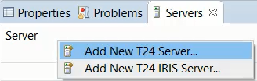 - A new screen is open. Give a project name(make sure it includes '-server' string) and click Next.
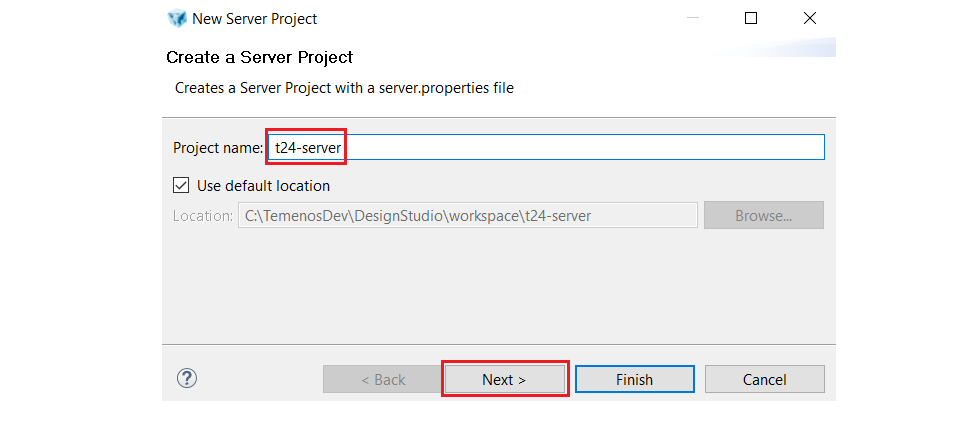 - Choose connection type as T24 Server-Web service and click Finish.
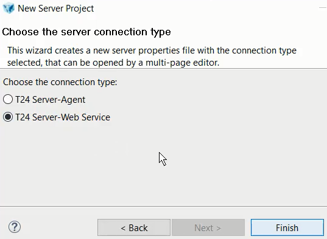 - After the server is created, the server.properties must be updated according to your details related to your sandox:
-> In T24 User (deployment only) section, 2 T24 users that you use to connect to your T24 sandbox must be introduced.
-> In WebSerbice (TAFJ) Connection section, Secured box must be checked, Protocol must be set to ws value, Hostname must be set according to the hostname of your sandbox, Port must be set to 443 value and Context to axis2 value.
jBC Routines Development
jBC routines are developed in the data-code module which must be first toggled to TAFJ project nature by following next steps.
- Right click on data-code module and choose Toggle TAFJ project nature.

- In the next screen, import tafj_properties from Your_DEV_Path/TAFJ/conf folder, choose TAFJ_HOME as Your_DEV_Path/TAFJ folder and click Next. In the bellow picture, DEV_Path is set to C:\TemenosDEV.

- In the next screens, click Next and Finish.

- In the end, data-code module should be toggled.

After the data-code module is toggled to TAFJ project nature, the jBC routines development can be initiated.
- In order to create a new jBC routine, expand data-code module, go to src->Source->Private, right click on project name (FT_Sample in the above picture), select New and then New T24 routine / component / testcase. 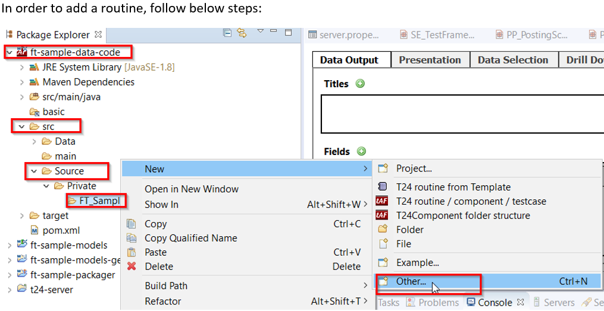
- On next screen, type the name of the routine and click Finish.

- The new routine is created.

Import T24 Applications, Enquiries and Versions
- In order to import Applications/Enquiries/Versions from your sandbox to your local machine, make sure you have a T24-server created, configured and started in Design Studio.
- Go to Servers tab, right click on your server state and change state to active.

- State should become active:

Note
The following example is about importinh Enquiries from your sandbox to your local machine. The same steps can be aplied for Applications and Versions.
- After the T24-server is active, right click on the models and choose Import:

- Select Design Studio, choose Import T24 Enquiries and click on Next button. (you have to wait until the list of enquiries is fetched from the sandbox).
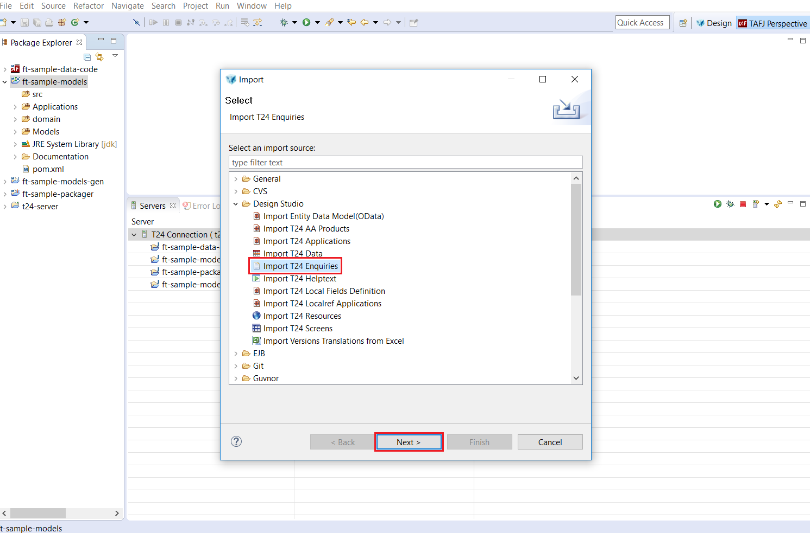 - Select from this list which enquiry you want to import from the sandbox to your local machine and click Next.

- Choose the location from models module where to import the enquiry and click Finish.

- Click on Finish button and wait until the operation is completed. A successful message will be displayed at the end.

Enquiries and Versions
Import Enquiries
- Go to Models, click right and choose Import:


- Select all or just enquiries that you are interested in
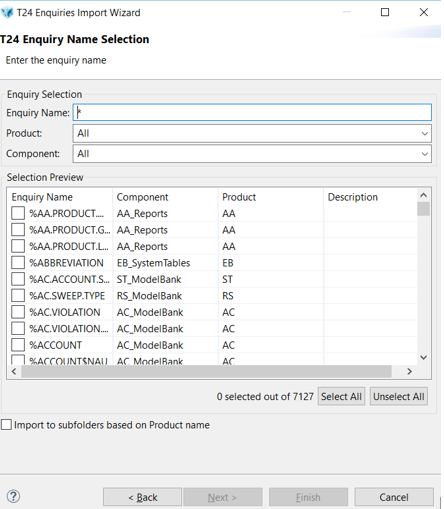
- Example of a single enquiry import:

- Click on Next button and chose the location:

- A success message is displayed:

Import Versions
- Go to Models, click right and choose Import:

- Select all or the versions of interest:

- See below example:

- Click on Next button and chose the location:

- A success message is displayed:

Create a T24 package based on your project
- Go to ft--packager in Design Studio workspace, right click on Launch T24 Packager (TAFJ).launch and choose Run As > Launch T24 Packager (TAFJ).

- Wait for successfull build for the project.

- Check where the package was generated.
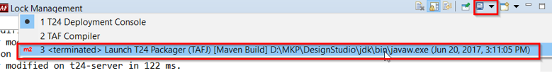
Deploy the generated package to Sandbox
Note
Make sure you cloned in your local machine the GitLab repository of your sandbox.
- Copy the generated package into the packages folder of the cloned GitLab repository from your local machine:
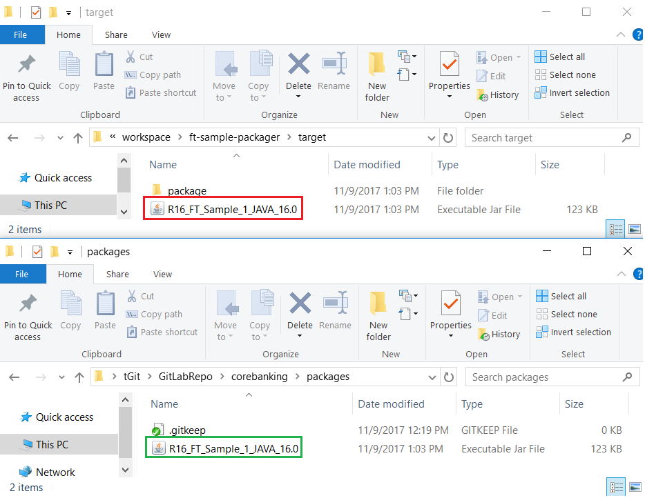
- If the package is a new file in the repository, the package must be first added to the repository:

A screen will appear saying that the file was added. Press commit:
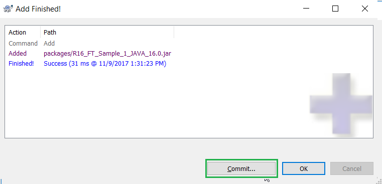
A new screen will appear. Insert a comment in the upper window and then choose Commit.

A new screen will appear and choose Push.
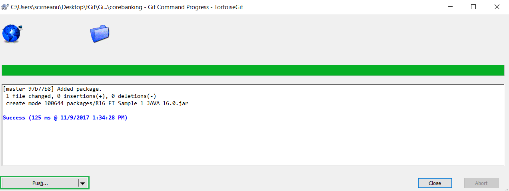
A new screen will appear and choose Ok.
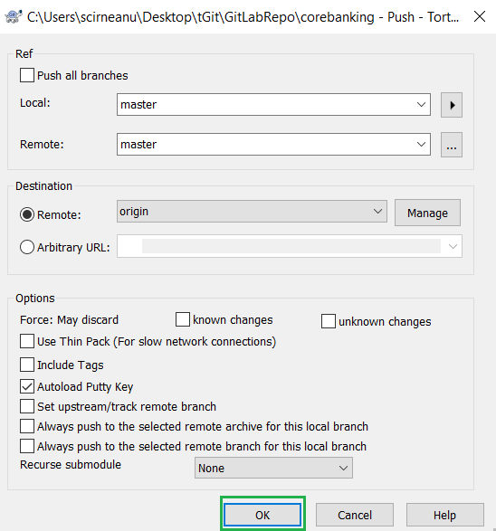
A success message should be displayed.
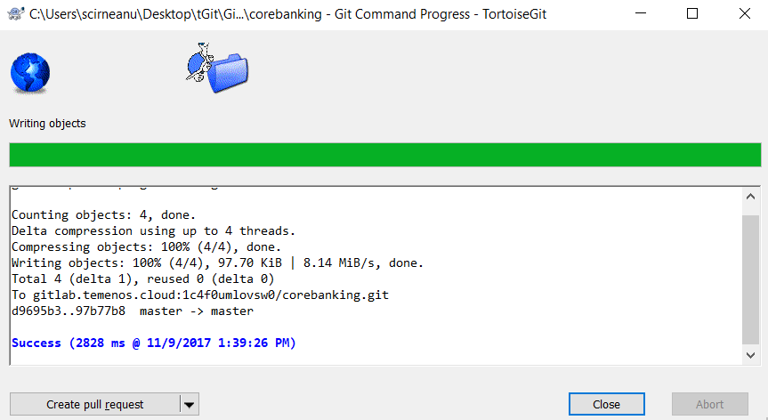